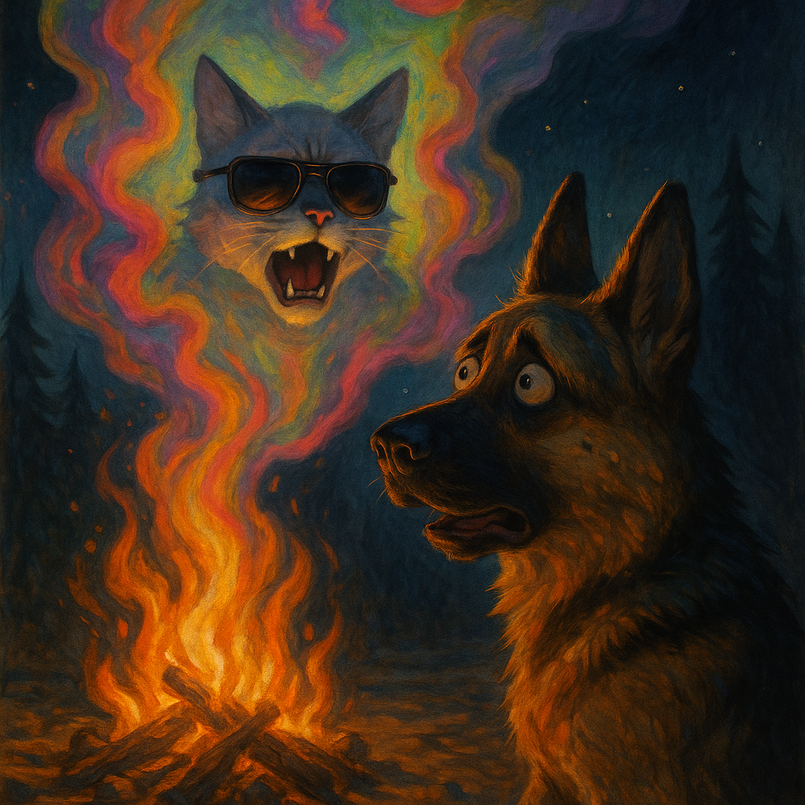

The UOC Observer
H'Online Since 2024 Fwend

The Kittej H'Empjire stands unshaken, its paws firmly wrapped around the reins of UOC. The Behbejs, once wary, now move with the disciplined precision of true imperial subjects—though whether out of genuine loyalty or the simple, hypnotic allure of the H'Empewor's tuna-laden decrees remains a matter of hushed debate. The whole affair has taken on an air of inevitability, as if history itself had simply shrugged and said, "Yes, this is how things are now."
The Hippies, for their part, had been... distracted. A particularly potent batch of vapours had left them sprawled around their cjampfjire in a giggling, half-conscious heap for munfs. Post Chance had tried to join in, but after four days of watching them stare at their own hands in slack-jawed wonder, he decided his talents were better spent doing what he did best—delivering mail and training with the Behbejs Posties under the cover of night. The Kittej H'Empjire's forces had tried to intercept him, of course. They'd sent delivery personnel, then threats, then even attempted to enlist the infamous H'Arrow XL for a good old-fashioned kitnapping. But H'Arrow XL never showed (probably got lost in paperwork), and now Post Chance moved through the streets like a shadow, unstoppable, annoyingly efficient.

In the gilded halls of the Kittej H'Empjire's inner sanctum, the Grand Vizier, H'Allen, presided over a meeting of the most powerful figures in the land. The Witch King of Ham-Mar (formerly known as Weggie the Pig, though nobody called him that anymore) loomed in the corner, his once-plump frame now draped in ominous regalia. His voice, when he spoke, was a reedy, venomous hiss—exactly the kind of voice one expected from a creature who had spent the last few munfs deep in the dark tomes of forbidden pig-lore.
Reports were given:
Then came the matter of Post Chance.
"H'IS VEWY CONVENIENT," chirped one council member, earning a glare from H'Allen.
"H'IT'S NOT ACCEPTABLE," the Grand Vizier snapped, slamming a paw down. "We should have stjopped this munfs h'ago!"
Muldoon nodded gravely. The Witch King merely hissed.
The Witch King of Ham-Mar had embraced his role. No longer just a pig in a fancy cloak, he had become something... else. Something that lurked in the shadows, whispering to forbidden spirits and practicing ominous hoof gestures in front of mirrors. When he spoke, the room chilled.
"Hiiippppies... commune..." he rasped, his beady eyes glinting beneath his hood.
H'Allen swallowed hard. "You h'are weady then, Ljord Ham-Mar?"
A slow, sinister nod. "The nine ride h'as one."
The Grand Vizier gulped. "I shall h'infjorm the Pirates, the Daisy will be with you..."
As the council dispersed, Gibbs and McGee exchanged glances.
"Wonderful purrrrrfjormance!" murmured Gibbs.
"Hecking h'purrrfection," agreed McGee.
Behind the scenes, the Drama Department purred with pride. Their star pupil had nailed the role.
Back at the cjampfjire, the Hippies were still lost in their haze. One poked at the vapours, sending a lazy puff into the sky. "Oooooooh..." they chorused, mesmerized.
"Was we meant to be doing sumpfink...?" someone slurred.
"...no... no... m... no."
Then—the vision struck.
Sergeant, sprawled in the dirt, suddenly saw. Colors exploded behind his eyes. Shapes twisted. A face formed—sunglasses, a scowl, sheer unbridled rage.
TERRY.
"WHERE THE HELL HAVE YOU BEEN!?" Terry's spectral voice boomed. "I HAVE BEEN A PWISONER FOR NEARLY 2 MUNFS!!!!!"
Sergeant giggled.
A pinecone materialized out of nowhere and slapped him across the face.
"WAKE H'UP, YOU SONS H'OF UOC! WAKE. H'UP."
The world lurched. The ground vanished. Darkness swallowed him whole, and in its depths—a hiss. Not a Kittej hiss. Something worse. A hooded figure, hoof outstretched, voice like nails on slate:
"Hiiippppies... commune..."
The figure lunged—
BLINDING LIGHT.
Sergeant gasped, back in the real world, ears flat, tail between his legs. The other Hippies blinked dazedly, shaking off the vapours as Sergeant's howl of warning cut through the fog.
Something was coming.